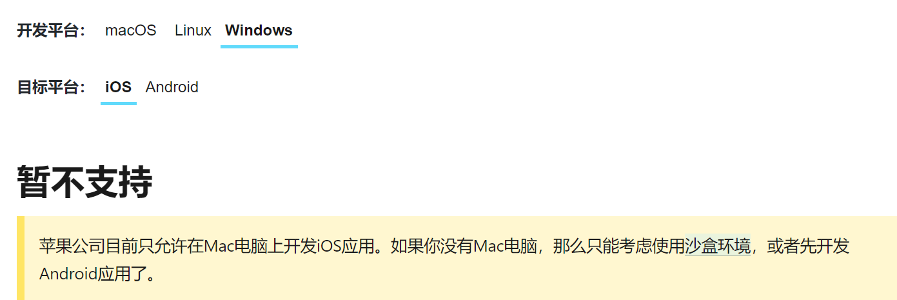
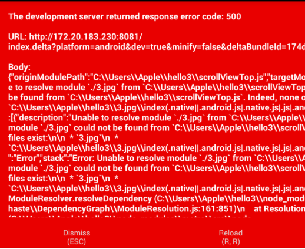
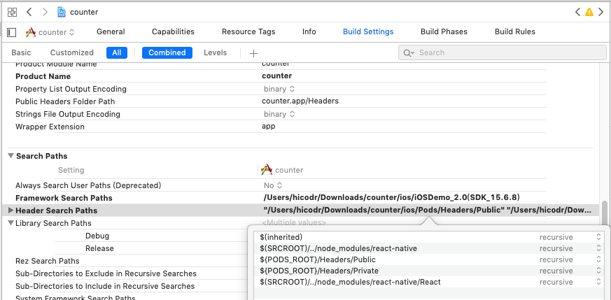

react-native扩展:IOS踩坑纪录¶
Apple公司 不允许非Mac电脑 开发IOS，编译IOS应用 必须使用Xcode ，应用打包 必须先申请IOS开发者资质（99美刀/年） ，否则就只能在虚拟机上望梅止渴。
关于申请Apple开发者资质，我整理了一份流程， 通过链接下载
申明，我是个windows+android用户，没有Mac也没有iphone(而这些都是开发IOS的必要条件)。
但是没有办法，需要编译IOS版本，只能硬着头皮上了。
MAC虚拟机配置流程¶
黑苹果镜像¶
为了省下租借（购买）MAC电脑的钱,一定要交社费进入万恶的 黑苹果社区
我在这里获取了MacOS mojave 10.14的黑苹果镜像（当然，在此你就可以选择另一条道路——安装双系统而非虚拟机）
并通过 ENFI下载器 快速下载了（没有度盘会员的穷你们懂吗）
VMware使用unlocker破解¶
首先提供一下我看的两篇unlocker教程
大致流程是 1.任务管理器关闭VMware监控进程 2.以管理员身份运行unlocker
通过unlocker，VMware创建虚拟机中的Mac选项被解锁。
什么？你VMware没激活？这种问题你好意思问吗？

配置react-native运行环境¶
首先打开科学上网工具，安装 Node 、 Watchman 和 React Native命令行工具 以及 Xcode （从 Apple官网 下载） 。
RN的要求是Xcode 10及以上，我下载了Xcode 10.1，追悔莫及。
为什么这么说，这是因为之后的很多bug，我在stackoverflow上搜索时， 见到了这样的解决办法：
I updated Xcode 10.1 to Xcode 11.1 and then the problem fixed.
我看到这个都要哭出来了—-
安装成功后
react-native init xxx
cd ./xxx
react-native run-ios
成功运行了样例
将RN项目移植到MAC环境下运行¶
本以为移植过来直接run-ios就可以了，结果死的很惨系列
红屏镇楼
因为不知道到底是哪个第三方模块出了问题，只好逐个排查
第三方模块的逐个重新安装¶
首先
思路是一个个装，装到哪个出了问题就肯定是哪个了
血与泪的纪录，找出四个害人精
yarn add native-base
yarn add react-navigation
yarn add react-native-gesture-handler
yarn add react-native-material-ui
yarn add @react-native-community/async-storage
yarn add react-native-vector-icons
#第一个害人精
yarn add react-native-share
yarn add react-native-image-crop-picker
#第二个害人精
yarn add react-native-image-zoom-viewer
yarn add react-native-yunpeng-alipay
#第三个害人精
yarn add react-native-swiper
yarn add react-native-image-pan-zoom
yarn add react-native-img-cache
yarn add react-native-image-progress
yarn add react-native-progress
#第四个害人精
yarn add react-native-fetch-blob
yarn add react-navigation-stack
react-native-image-crop-picker 相机相册¶
报错是QBimagepicker的问题，这让我想起了当初使用这个库的时候有一大段看不懂的文字。
通过仔细阅读 react-native-crop-picker文档 中的Post-install steps-IOS 解决。
react-native-yunpeng-alipay 支付宝支付¶
这个组件是真的害人，他没有编译ios版本，很快我就使用了 新的支付宝接入的实现方法 。
react-native-progress 加载动画¶
这个组件库很棒，但为啥出了问题呢？
因为在IOS里，作为基础库的react-native-art不会被默认导入，但android里是预编译的。
- 具体方法参考了很多博客：
Go the Build Phase tab of YOUR PROJECT, add libART.a into Link Binary into Libraries.
过程中出现了include失败的问题，将search header files中的方式改为recursive（递归地）并添加一些头文件目录
IPhone X屏幕适配¶
历经九九八十一难，项目终于成功跑起来了。
然后遇到了屏幕适配问题，Iphone X已经升级成全面屏，屏幕下方60px高度被系统键占用。
const X_WIDTH = 375;
const X_HEIGHT = 812;
const SCREEN_WIDTH = Dimensions.get('window').width;
const SCREEN_HEIGHT = Dimensions.get('window').height;
const isiosx= (Platform.OS === 'ios' &&
((SCREEN_WIDTH === X_WIDTH && SCREEN_HEIGHT === X_HEIGHT)
||(SCREEN_WIDTH === X_HEIGHT && SCREEN_HEIGHT === X_WIDTH)));
通过判断IOS X来对组件进行调整，EZ。